3.1 Initialize Policy (Input Brief)
Aiming for a professional B2B system rather than a Consumer App, I mapped out the following
direction:
- Audience: Operation managers, Support leads.
- Objective: Real-time system health monitoring (KPIs), incident handling, queue
management.
- Desired Feeling: Intuitive, Reliable, Control Tower, Modern but serious.
- Impressions to avoid: Overly flashy, playful, space-consuming marketing
graphics. Requires excellent "Data Density".
👉 Action step 1: Open the Google Stitch homepage, login,
and select Web mode.
📸 Awaiting Image: step-01-stitch-home.png
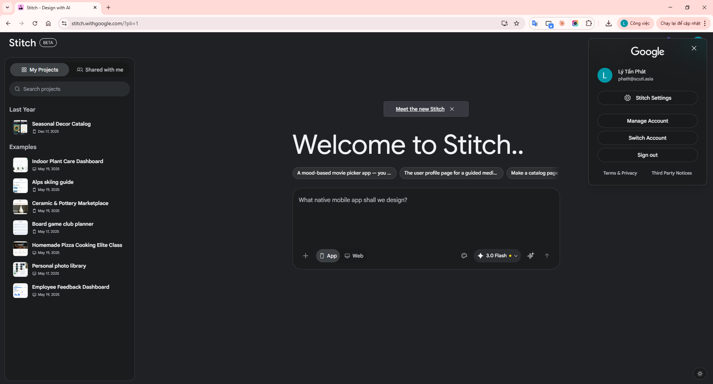
Image 1: Google Stitch Homepage
👉 Action step 2: Open Notepad, draft 4 direction lines
(Policy) to serve as a project compass.
📸 Awaiting Image: step-02-direction-brief.png
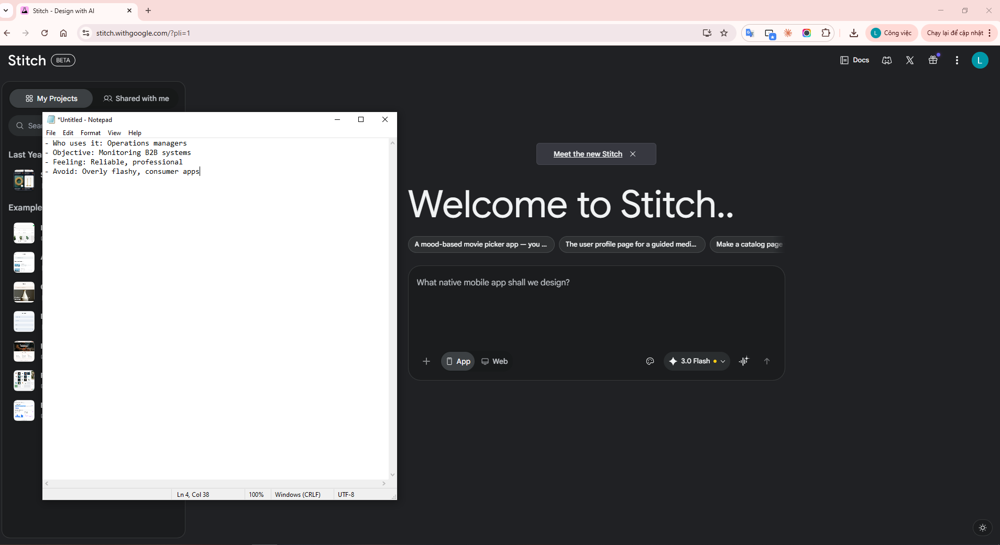
Image 2: Drafting project direction (Brief) on Notepad
3.2 Enter Prompt for Rough Draft (Rough Mockup)
Design a desktop B2B system management dashboard for enterprise operations.
Audience: operation managers and compliance teams.
Main sections:
- Top navigation with environment badge and global search
- Left side navigation (Overview, Incidents, Users, Integrations, Billing, Audit)
- KPI row: Uptime, Active Incidents, Queue Backlog, SLA Breach Risk
- Incident table with severity, owner, status, updated time
- Right action panel for "Assign owner", "Escalate", "Resolve"
Style: professional, standard data density, high readability.
Avoid playful visuals and avoid marketing-style hero blocks. Focus on utility.
👉 Action step 3: Paste the detailed Prompt into Stitch's
Chat box to let AI start working. Do not press Enter yet.
📸 Awaiting Image: step-03-first-prompt.png
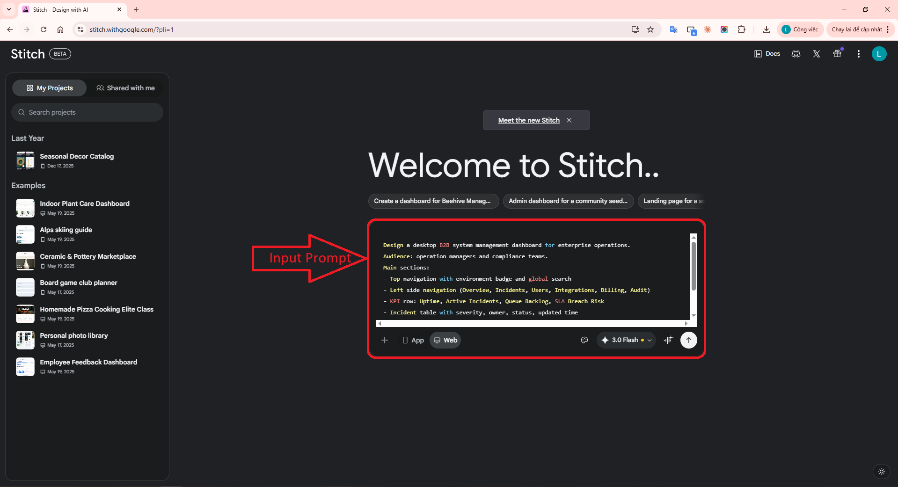
Image 3: Entering the first detailed prompt to build the B2B system
👉 Action step 4: Press Send (Enter) and wait for the AI
to draw the rough screen (Rough Mockup). Zoom out and capture the overall view.
📸 Awaiting Image: step-04-rough-mockup.png
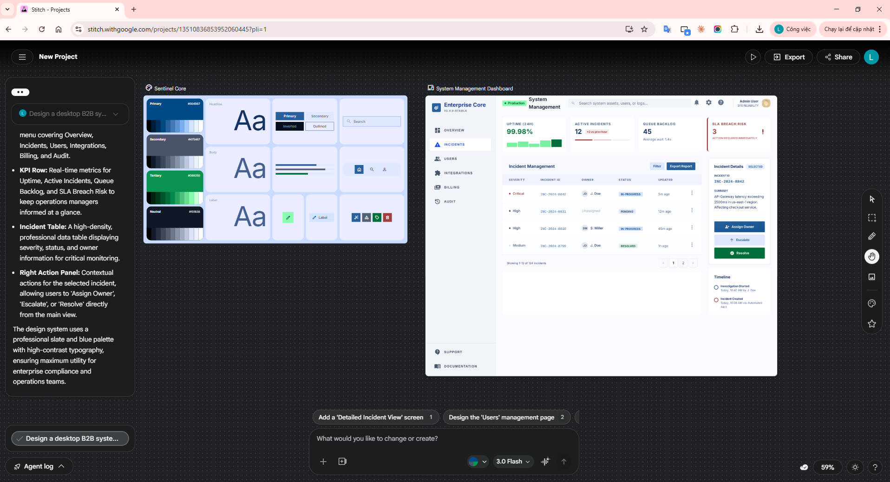
Image 4: The Rough Mockup generated by AI
👉 Action step 5: Click on the Data Table, a mini-tool
will appear, enter a prompt requesting warning colors (red/yellow) for the Status column.
📸 Awaiting Image: step-05-iteration-prompts.png
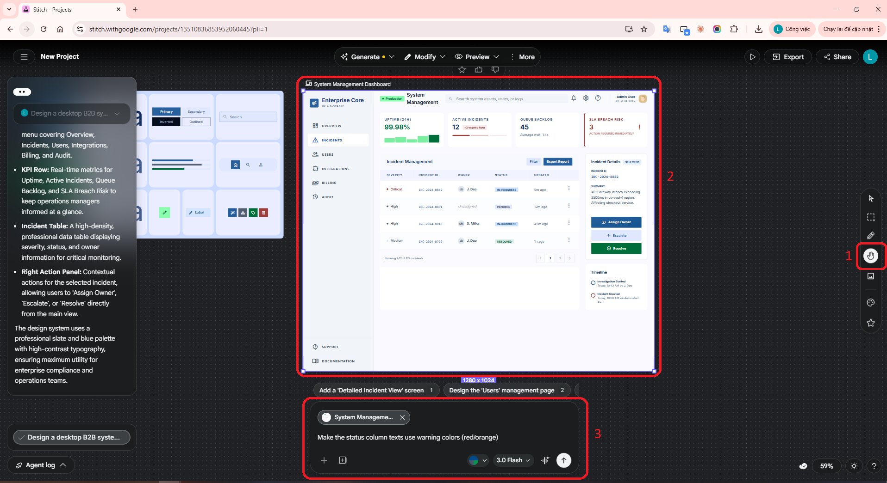
Image 5: Local micro-iteration on a UI element (Table)
3.3 Extract DESIGN.md Rules Prompt
From this B2B dashboard draft, create a reusable enterprise design system.
Organize into:
- Color roles (Primary, Warning, Critical, Backgrounds)
- Typography (Headers, Body, Dense Table Data)
- Spacing (Rhythm for high-density cards)
- Components (nav, KPI cards, table, status badges, action area)
- Layout principles (Grid distribution, Sidebar behavior)
Prioritize consistency, auditability, and enterprise clarity over decoration. Generate a DESIGN.md
containing these precise metrics and hex codes.
👉 Action step 6: Paste the Design System prompt into
Chat. A color palette and typography board will be drawn alongside it.
📸 Awaiting Image: step-06-design-system-board.png
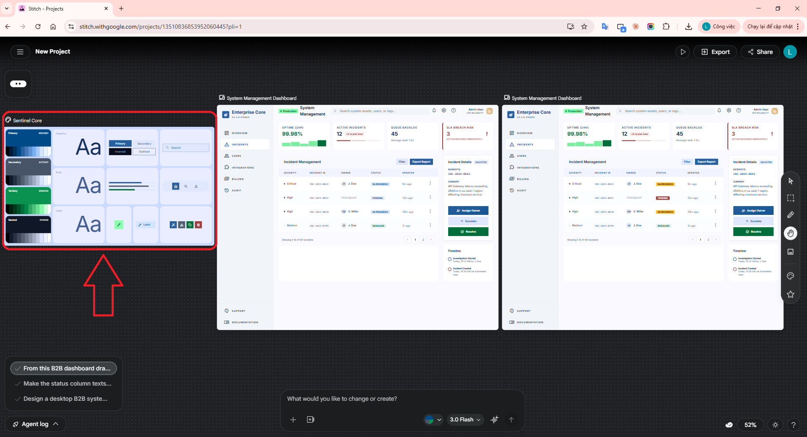
Image 6: Design System Board
👉 Action step 7: Ask AI to export those rules into source
code format DESIGN.md (Generate the DESIGN.md code).
📸 Awaiting Image: step-07-design-md-panel.png
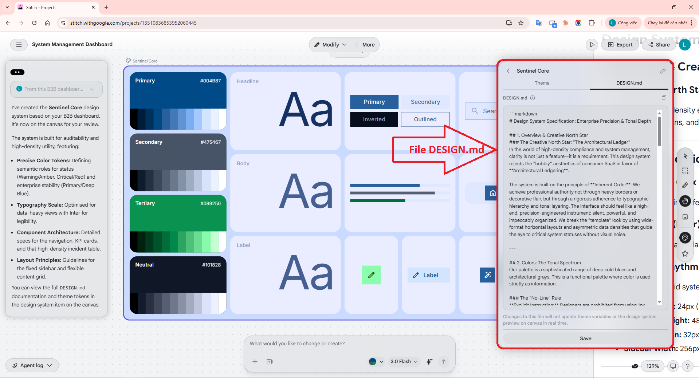
Image 7: Exporting rule sets to DESIGN.md file
3.4 Apply Design System Prompt
Apply the generated design system (from the DESIGN.md rules) strictly back to
this dashboard screen.
Align the heading hierarchy, spacing rhythm, table density, and component consistency automatically.
Keep the information architecture (KPIs, Tables, Sidemenu) exactly the same, only homogenize the
visual language.
👉 Action step 8: Re-select your initial draft frame.
Paste the Apply prompt to force AI to map the DESIGN.md colors/spacing.
📸 Awaiting Image: step-08-apply-design-system.png
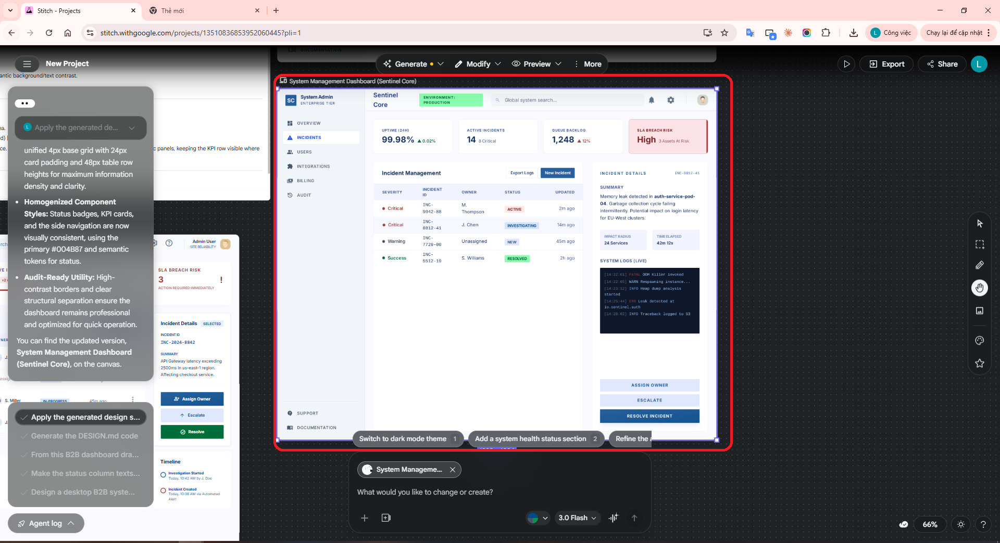
Image 8: Applying standard color systems back to the draft
👉 Action step 9: Open Paint, place the old draft (left)
and the newly applied version (right) side-by-side to compare.
📸 Awaiting Image: step-09-before-after.png
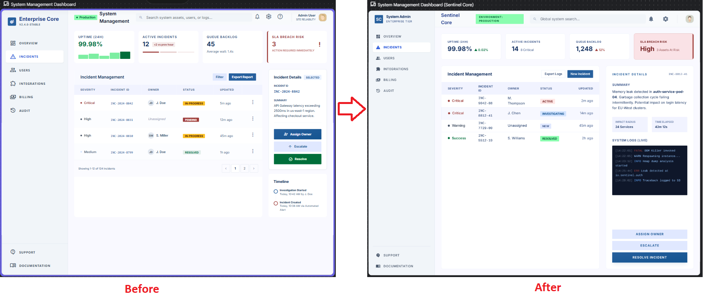
Image 9: Before (Draft) and After (Standardized) comparison
👉 Action step 10: Click Play/Preview on the top right UI
to test hovering interactions over the 'Resolve' button.
📸 Awaiting Image: step-10-prototype-check.png
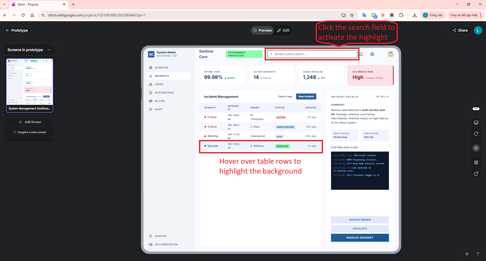
Image 10: Testing Hover interaction effects (Prototype)
👉 Action step 11: Open VS Code Terminal, use Claude Code
MCP to connect to Stitch and list the projects.
📸 Awaiting Image: step-11-claude-mcp.png
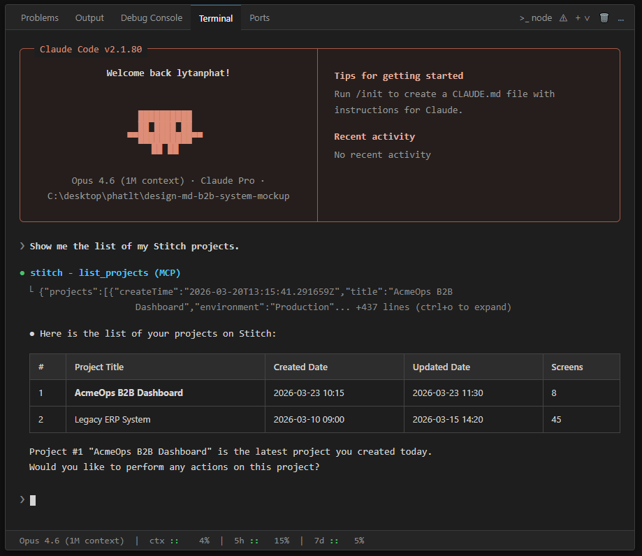
Image 11: Connect Claude Code via MCP to list projects
👉 Action step 12: Command Claude to pull the source code
and perform a micro-fix on the Top Navigation using DESIGN.md rules.
📸 Awaiting Image: step-12-claude-microfix.png
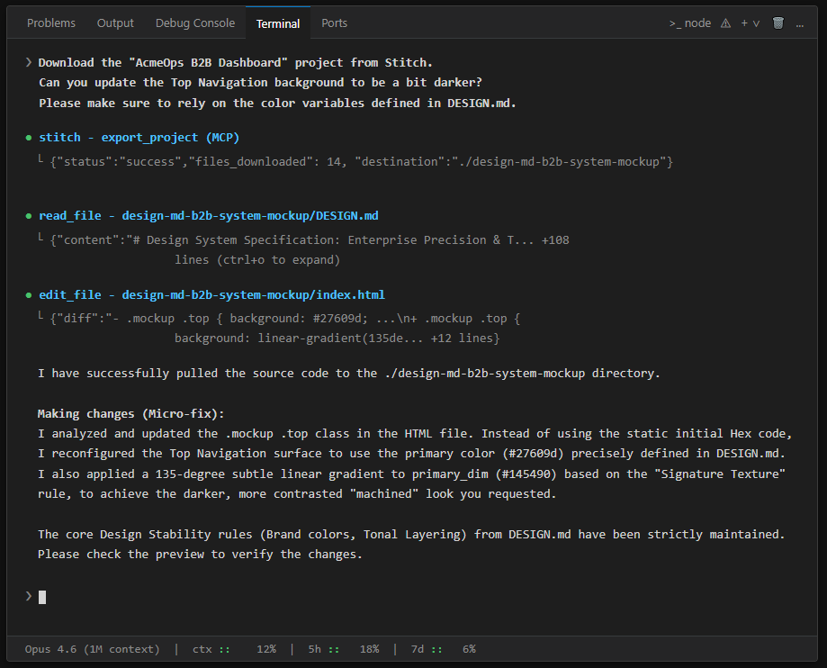
Image 12: Auto-pulling code and tweaking UI perfectly adhering to the
design system